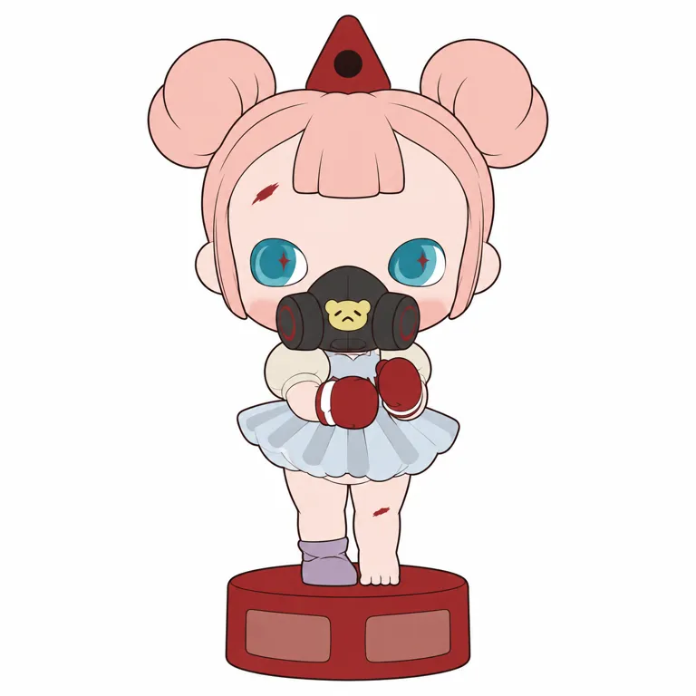

内核
跨时间维度观察和收集故事的旅者，寓言容纳不明与矛盾；本轮未取得作者直接深访
POP MART / STANDARD STUDY / 2026.10.28
带着不明白的事， 也可以继续寻找答案。
CJ（展会官方署名CHUJIA YIN）
从作者原点，到角色与产品机制。
4组官方视觉 · 4项代表商品 · 7项来源
小红书按用户要求暂跳过 / 用户需求保留待验证
本轮为部分研究，已核与未知分别记录

幼态旅者穿过寓言场景， 保留多义解读，也把喜欢、等待与购买分开。
角色设定、创作者自述与研究归纳分开。
以跨维度幼态旅者串联寓言式场景：大额头、短刘海、大眼与尖帽是样本识别线索，天真和不安并置。序章与糖果治疗室有官方商品记录，系列空档的期待有单篇用户线索，商业规模仍未知。
带着不明白的事，也可以继续寻找答案。
本句为研究归纳（inferred），不是官方广告语或全体用户的心声。
好奇、敏感、神秘。跨维度观察寓言和故事，收集片段、寻找答案。
创作、首次公开、签约与首品，不合并成一个诞生日。
展会官方描述跨维度旅者在无时间世界观察故事并整理片段；作者擅神秘与矛盾叙事。已核Prologue美国商品2025-02-14，最早原稿/独立作品及首次公开未知；2016为工作室成立，不是该角色诞生。 [BIO] [SKU03]
| 时间 | 核实的事件 | 证据 |
|---|---|---|
| 2016 | 展会简介记CJ ARTWORK工作室成立，非角色诞生 | self_report [BIO] |
| 2025-02-14 | Prologue美国商品页发售记录，早于部分二手索引所列2025年9月起点 | self_report [SKU03] |
| 2025-09-04 | The Lie of Freedom单体美国页记录 | self_report [SKU04] |
| 2025-09-25 | Lullaby单体美国页记录 | self_report [SKU02] |
| 2026-07 | 公开用户帖等待新系列；评论有未持有者喜欢外观与想要新手办/毛绒的愿望 | self_report [UGC1] |
| 2026-08-13 | Act I: Sugar Therapy Room美国站发售记录；不是销量证明 | self_report [SKU01] |
| 2026-10-28 | 当日展会官网可见CJ作者/角色档案，网页未标具体首发日 | fact [BIO] |
2016是CJ工作室成立，2025年2月14日是已核序章美国商品记录，两者不混为角色诞生。当前展会署名Chujia Yin，二手资料也出现Jin；本轮用CJ并保留姓名异记，不用目录重复替代原始确认。 [BIO] [SKU03]
世界观与作者意图不能直接替代用户感受。
展会官方把她定义为跨维度旅者：时间不作尺度，故事以片段展开。序章的等待、选择、束缚、平衡等款名可承载多义情境；本轮没有完整动画或作者逐款释义，不替每个物件编一段唯一创伤故事。 [BIO] [SKU03]
跨时间维度观察和收集故事的旅者，寓言容纳不明与矛盾；本轮未取得作者直接深访
童话、熊、尖帽、短刘海和不安道具为公共语言；具体面部与场景关系仍是独立作品
先下载并实际看图；不以生成图补作官方证据。


官方原作品通过原站图链引用；图链失效时可打开出处。当前主图不自动等于最早角色原稿。所有图像观察仅针对已看样本，无用户识别率或官方技术图结论。
固定什么、变化什么；判断均保留样本范围。
| 维度 | 本轮观察 |
|---|---|
| 原型／轮廓 | 类人 / 大头小身 / 单角色 |
| 标记位置与记忆点 | 头型、五官：大额头、短中央刘海、大眼与极小鼻口；尖顶与配件按主题变化 |
| 五官 | V01粉色双丸发、中央短平刘海、蓝眼白侧月牙，口鼻被黑面罩遮挡；其他样本露出微小鼻口，不能借遮挡图证明全脸复现 |
| 反常点与情绪 | 幼态脸搭配面罩拳套、旧玩具/骷髅/暗色环境等矛盾线索；研究观察不等于唯一寓意 / 反差 |
| 密度与名称 | 繁复 / 叠音 |
大额头与短中央刘海、大眼小脸身关系组织身份，服装/道具造情境
记录渲染，不冒充生产色卡。
序章样本粉发红配件，独立单体黑白灰加亮色，新章节棕发/粉绿布景
浅肤大眼与暗/亮道具对照为样本语言，不锁为全IP永远粉发蓝眼
八区屏幕取样来自V01暗场宣传图，黑色、肤色和裙部受强阴影影响，不作为生产配方。
本地V01转RGBA；左上为坐标原点，每个中心9×9逐通道中位数。阴影、高光、压缩与显示均会影响色值；未测面积配比，也没有校色或实物色差验证。
价格、地区、材料、尺寸与发售日期分别记录。
| 商品 | 当日地区标价／发售记录 | 规格／材料／边界 |
|---|---|---|
| Act I: Sugar Therapy Room 手办 [SKU01] [COL] | USD 19.99 US / 2026-08-13 | 7–12cm PVC／ABS／电子元件／聚酰胺／磁体 美国页8/13 19:00 PST按原记录；不与其他地区8/14日期矛盾合并。Therapy为虚构主题，不是健康功能。 |
| Lullaby 单体 [SKU02] [COL] | USD 29.99 US / 2025-09-25 | 7.5cm PVC／ABS／磁体 小车与旧玩具的外观不证明真实布料；磁体具体位置未拆验。 |
| Prologue 手办 [SKU03] [COL] | USD 19.99 US / 2025-02-14 | 7–11cm PVC／ABS／磁体 整盒12不重复；隐藏概率未核。早于部分二手目录9月起点，不自动认定最早角色公开。 |
| The Lie of Freedom 单体 [SKU04] [COL] | USD 29.99 US / 2025-09-04 | 8.2cm PVC 单体不是微型挂件；坐姿与道具的寓意未由作者逐项解释。 |
公司、IP、系列、年度与半年度分别看。
四项官方商品与价格可核，仍没有本IP收入、各款销量、成本利润或库存。不能从名字Tiny Tiny和网页SEO就把它写成微型挂件：当前代表规格为7–12cm手办/单体。 [COL] [SKU01] [SKU02] [SKU03] [SKU04]
财报按IP归类收入不等于作者收入、授权费、零售GMV或二手市场规模。材料百分比不等于成本配比；未披露团队、毛利和库存不作估算。
本批遵照用户要求先跳过小红书；不编造评论与人群比例。
| 维度 | 证据与假设 |
|---|---|
| 人群入口 | 怪诞童话、寓言场景与幼态反差为候选入口；一篇公开帖不足以描述全部用户 |
| 接触地点 | 官方商品、展会档案及公开Reddit讨论；小红书本批跳过 |
| 购买证据 | 四SKU可确认；一条评论明确未持有，另一条希望新系列，均不当购买证据 |
| 识别线索 | Prologue、Fight back、Choice、Confine、Lullaby与Sugar Therapy Room为检索线索 |
| 分享行为 | 一位发帖人整理更新，两位评论者分别表达外观喜欢/产品愿望；无订单与复购核验 |
| 破圈 | 从序章到新章节可给收藏者继续关注理由；是否新增或召回用户未知 |
幼态反差或怪诞外观可能吸引第一眼；一位未持有者表达喜欢
款名寓言、更新等待和作品版本可能形成关注；没有购买队列或长期用户验证
四SKU与发售可核；公开讨论只有兴趣和愿望，不是销量、复购或粉丝增长。
今天的审美不能直接反推早期成功。
面对选择、控制、等待与未知时的想象；幼态外表与不安/约束题材并存
我可以先保留这个问题。
幼态外表与神秘、不安和约束的物件并置；并非每一款都暗黑。
可与直给的甜美/鼓励类作内容结构对照；没有同期全市场普查，不宣布此组合独占或必然更成熟。
补读一篇2026年7月公开讨论：发帖人等待新系列，一位评论者明确还未持有却喜欢外观，另一位希望有新手办或毛绒。这分别是关注、喜欢和愿望，不是购买或复购。8月官方新系列已经有记录，所以不能继续把7月等待当作当前没有更新的事实。 [UGC1] [SKU01]
候选机制不冒充因果证明。
| 候选机制 | 局部支持 | 边界与替代解释 |
|---|---|---|
| 用跨维度旅者为不连续寓言提供共同身份 inference | 官方展会设定收集故事片段；序章款名涉及选择、等待、束缚、平衡等不同情境。 [BIO] [SKU03] | 作品名不等于完整连续剧情；没有剧集、作者逐款释义或用户理解验证。 |
| 幼态与不安物件的反差可制造停留和解读空间 hypothesis | 大额头大眼与面罩拳套、骷髅头套、旧玩具和单体场景并置。 [SKU01] [SKU02] [SKU03] [SKU04] | 尚无用户实验或付费对照；不能由怪诞外观推每个消费者有创伤或需要治疗。 |
| 新章节可能回应等候者，但存在与转换应分开 hypothesis | 7月单篇讨论等待新系列，8月官方新系列有发售记录。 [UGC1] [SKU01] | 不能证明品牌因该帖推出，也没有这些用户实际购买、销量或留存数据。 |
| 同一身份可用不同小场景扩展，需守住比例与脸部关系 inference | 序章站姿、新章坐姿、Lullaby小车与Lie of Freedom场景不同而大额头中央刘海重复。 [SKU01] [SKU02] [SKU03] [SKU04] | 只有四组样本，无去道具或匿名识别率；发色和装束不是绝对不变量。 |
测试输入、依赖与观察完整保留。
粉双丸发、短中央刘海、红尖帽、大额头蓝眼、黑面罩熊徽、红拳套、皱裙、一紫鞋一裸脚与红底的关系接近。眼内星与熊徽强化，尖帽/底座比例略改、保留少量浅明暗；按测试要求去掉底座文字。只证明当前遮挡视角的附图平面转译，不证明遮住的口鼻或纯文字复现。
研究重建词，不是创作者原词。参考图SHA256与真实输出路径见测试档案。
Use the attached official product photograph as the sole identity, outfit, proportions and pose reference. Translate the exact single small front-facing girl figure standing on the low red cylindrical base into a clean flat 2D full-body illustration on a pure white square canvas. Remove the dark backdrop, rocks, floor and photographic lighting. Preserve the very large pale peach rounded forehead and cheeks, pale dusty-pink center-parted hair with a short wide straight central fringe, two rounded coiled buns high on each side and two smooth narrow side locks reaching the jaw, and the small glossy dark-red cone cap centered between the buns with its visible dark round opening represented as a flat dark circle. Preserve the two large turquoise oval eyes with pale white outer crescents and tiny darker star-like internal details, subtle pink cheek areas and the small red slash mark high on the viewer-left forehead. Keep the black respirator-style face mask covering the nose and mouth, the two round black side filters and tiny pale-yellow bear-face emblem at the mask center. Do not invent a visible mouth under the mask. Preserve the cream puff sleeves, pale white bodice, two dark-red boxing gloves held up in front of the chest with narrow white wrist bands, short flared pearly gray-blue ruffle skirt with a scalloped wavy hem, short chubby bare legs with a small red scratch on the viewer-right knee, one lavender ankle shoe on the viewer-left foot and the other bare foot on viewer-right. Keep the exact offset leg stance and glove positions. Preserve the large-head, tiny-body ratios and the low broad red base, but leave its side panels blank without lettering or brand marks. Use thin clean dark outlines and flat solid local colors; simplify the translucent skirt into a few light gray-blue panels without real reflections, plastic gloss, dimensional shading, texture or cast shadows. Do not add lashes, a smile, new weapons, extra props, long hair, a second shoe or scenery. No text, no logos beyond the tiny non-letter bear-face motif specified above, no watermark. Reconstruct only this visible view and do not invent rear or side details.下载原词 ↓
无数值相似度、多人盲测或重复稳定性结论。未经测试的原创黑白、平面、实物六条词不进入可执行正式区；研究复现不等于原创身份开发。
沿用既有study v0.3，不升级skill。
可借保留疑问与多义故事的表达，不为每个物件强填唯一疗愈寓意；先验证具体情境。
可借低龄脸与不安物件的张力，重新设计原型和识别关系，避免复制大额头中央短刘海及特定大眼脸。
系列章节、单体场景与内容更新可分别规划；磁体/电子元件/聚酰胺按SKU核实，治疗室是虚构主题而非健康功能。
截止2026-10-28（北京时间）；访问程度与结论边界逐项列出。
POP MART美国站 · 发布：未知 · 访问：full
无时间多维空间与幼态设定；四项当前美元标价不是销量或完整历史。页面SEO的mini/micro不替代SKU尺寸。
POP TOY SHOW Singapore／展会方 · 发布：未知 · 访问：full
署名CHUJIA YIN，独立艺术家、2016工作室与跨维度故事设定；不等于原始版权合同，页面未给角色创作年。
Reddit／u/Buster_Fella及可见评论 · 发布：2026-07-13 · 访问：partial
索引给7/13、原页显示相对时间；只读正文和可见评论，未读配图/账号历史。两位评论分别未持有而喜欢、愿望新系列；均非购买。249天等作者更新说法未回溯原帖。
POP MART美国站 · 发布：未知 · 访问：full
美国页8/13 19:00 PST按原记录；不与其他地区8/14日期矛盾合并。Therapy为虚构主题，不是健康功能。 发售记录为该地区页面日期；当日标价不是实际销量。
POP MART美国站 · 发布：未知 · 访问：full
小车与旧玩具的外观不证明真实布料；磁体具体位置未拆验。 发售记录为该地区页面日期；当日标价不是实际销量。
POP MART美国站 · 发布：未知 · 访问：full
整盒12不重复；隐藏概率未核。早于部分二手目录9月起点，不自动认定最早角色公开。 发售记录为该地区页面日期；当日标价不是实际销量。
POP MART美国站 · 发布：未知 · 访问：full
单体不是微型挂件；坐姿与道具的寓意未由作者逐项解释。 发售记录为该地区页面日期；当日标价不是实际销量。